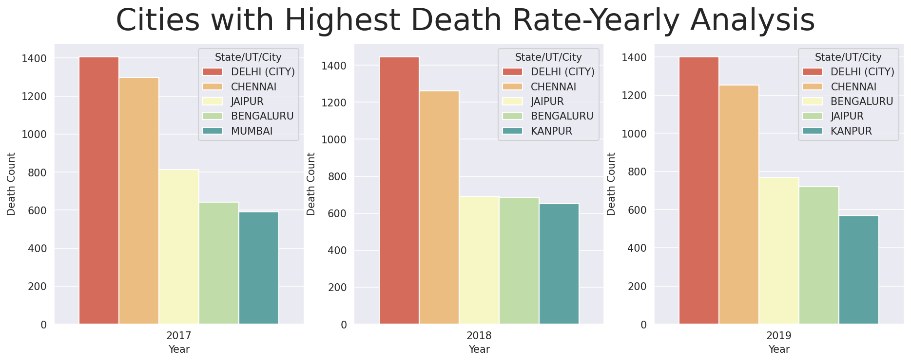
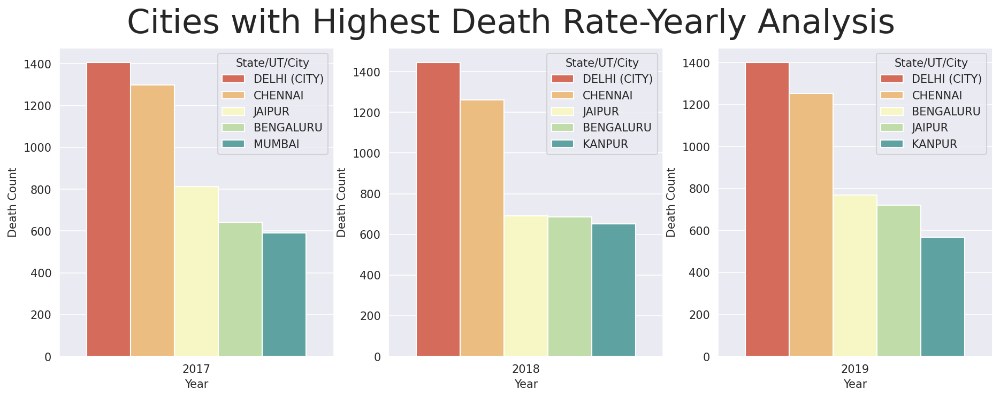
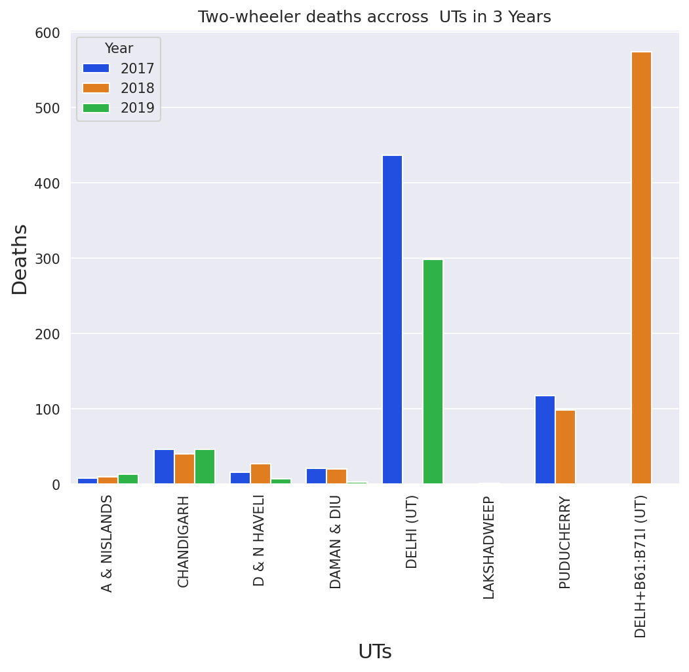
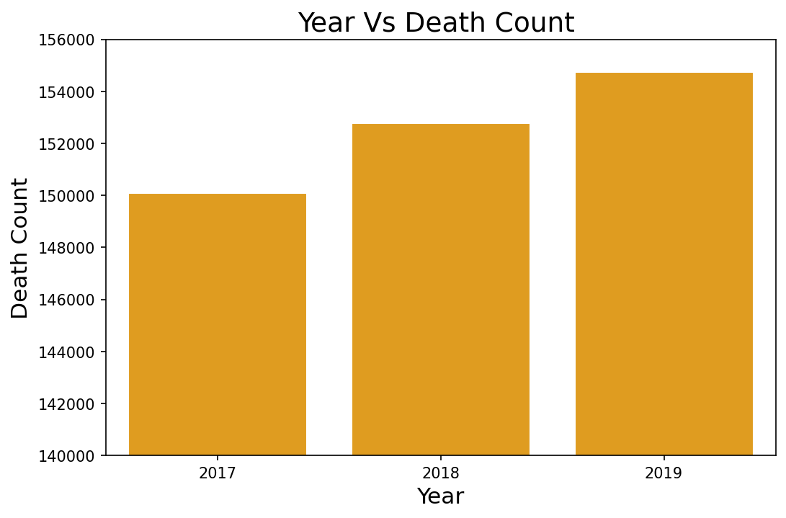

The Below graphs shows that during all the three years a very high number of accidental deaths were reported in Residential Areas.


The Below graphs shows that during all the three years a very high number of accidental deaths were reported in Residential Areas.
The maximum number of accidents in the country occured due to over speeding and dangerous/careless driving. Driving under the influence of Drug/Alchohol is also another cause affecting the number of accidents. A further analysis was carried out on this factor to get a better insight.
Below figures shows that highest number of accidents due to drinking and driving was reported from Uttar pradesh in the States category and from Delhi in Union Territory category. Accidents in UP due to this factor has only increased over 3 years. Andhra Pradesh shows very good improvement and the number of accident cases due to drinking and driving has reduced considerably.
Data shows that two-wheelers has caused highest number of accidents in the country and it has only increased over 3 years.

State wise analysis of data shows that Uttar Pradesh reported the highest accident deaths in the country and among the union territories Delhi reported highest death count. Among the cities in the country Delhi always topped the list in the number of road accident deaths.

 

Time of occurence data shows that maximum number of accidents in the country were reported between 6:00 PM and 9:00 PM.

Highest number of two-wheeler accidents were reported from Uttar Pradesh in the States category and from Delhi in the UT Category

Below graph clearly shows that the deaths due to road accidents has only increased in India from 2017-2019. Studies states that each year, about three to five percent of the country’s GDP was invested in road accidents. Notably, while India has about one percent of the world’s vehicle population, it also accounted for about six percent of the global road traffic incidents.
Data also shows that the majority of the adult victims from the fatal road accidents are Males.